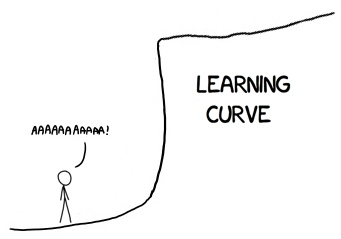

Learning Chinese

If you're thinking about studying Chinese, give up now. I
tried and gave up at least 10 different times before creating
Pingtype. Even now, I still don't know what's going on most of the time.
Index
Speaking
Nobody talks to me at work. I don't mean that in a bad way. I'm rather an introvert, and I'm allowed to listen to music in the office. I don't need to attend most of the meetings that waste the time of my colleagues. I'm not bored, although sometimes I do feel a little lonely. Everybody else is doing something more important, so I don't want to interrupt them. I eat lunch alone, at the same set of restaurants, who always give me "the usual" (the dumpling shop, the beef noodle shop, the duck biandang shop, the bubble tea shop, etc).
People do talk to me outside the office. Strangers are very friendly, but they don't speak Chinese. They'll start by asking "Where are you from?", which is a very difficult question for me to answer. The next question is often "Do you speak Chinese?", to which I reply "如果 你 要 我 講 中文，為甚麼 你 講 英文？" "Rúguǒ nǐ yào wǒ jiǎng zhōngwén, wéishènme nǐ jiǎng yīngwén" "If you want me to speak Chinese, why are you speaking English?". Then they stop talking to me.
I attend a lot of social groups. Every morning I go to KHOP to pray and read the Bible. On Monday nights I have Chinese class. On Tuesdays I go on dates with my girlfriend. On Wednesday I attend Hai-ke Fellowship (a Christian student group), and I host the CouchSurfing meetup. On Thursday I visit kids in the hospital with KMU Christian Fellowship. On Friday I go on dates, or to concerts (especially 滅火器 Fire Ex). On weekends I'm sometimes out of town at festivals or hiking to waterfalls. When I'm in town, I go to KGCC church youth group on Saturday afternoon. On Sunday I attend 7s church in the morning, and KIC English-speaking church in the afternoon. I also sometimes swim at the public pool next to KIC. I have over 1500 friends here who I met in real life and then added on Facebook.
But nobody talks to me in Chinese! If walk up to a group of local people, they will speak Chinese to each other until I arrive, then they immediately switch to English. If I want to listen to them speaking Chinese, I have to pretend to look at my phone while I listen to their conversation.
People ask if I "speak" Chinese. But the problem is that speaking is the hardest part. Everything else I can do alone, but I need other people to help me speak, and so far I've failed to find anyone to actually talk to me regularly.
Listening
I can listen to conversations, but I don't know what people are saying. Without translation, I might realise that some words are spoken more frequently, but I don't know the meaning.
If I'm in church and listening to a sermon, sometimes someone will offer to interpret for me. That is helpful for me to think about the message, but then I'm not paying attention to the Chinese words. I allow people to translate if they want, but I don't ask people to help, because I want to try to listen to the Chinese.
I also listen to music a lot. But my favourite local band is 滅火器 Fire Ex, and they sing in Taiwanese, not Mandarin. I listen to 95 songs in Mandarin, and 70 of those are Christian songs. I listen to some 讚美之泉 Stream of Praise and some 約書亞樂團 Joshuaband, but my favourite is 高雄廿四小時敬拜禱告中心 KHOP.
Pastor Van was very generous and sent me the PDF files with lyrics and chords of 405 songs that the KHOP musicians usually play. I extracted the text, and converted those to a format that Pingtype can read. I listen to the KHOP Live stream on Facebook every day, and when they play a song, I search a combined file with all the
KHOP lyrics and click on the title to see it in Pingtype.
Typing
I invented the Pingtype
text input method for this.
Other text input methods have a huge barrier to entry. For every character, you must memorise the bopomofo and the tone before you can type it. Handwriting recognition is possible, but there are only 4 options shown on my iPhone's screen, and if I get the stroke order wrong, then none of them are the character I want.
The pinyin keyboard is the easiest for me, because it doesn't require me to type the tone, and it gives a large number of choices for the character. It is also context-aware - you can type words (e.g. panwang) and it will guess the combined Chinese word you meant (盼望).
Reading
When nobody would translate for me in church, I would sometimes try to stay awake by taking the notice sheet and circling characters I recognise. Many foreigners do this, but I would only be able to read about 10-20% of the characters like this. I knew that I needed to reach at least 80% before I could guess the meaning.
Some people think that traditional characters are hard. China changed their whole writing system because they thought that characters are the problem. But they're not bad!
Traditional characters are easier to read.
When I went on holiday to Malaysia, and visited a church there, the word "róng yào" (glory) was written
荣耀 (simplified) instead of
榮耀 (traditional). The "róng" is wrong! I think that it looks like a tree 木 on fire 火. The simplified character removed the part that I was looking at to help me remember, so I was confused.
Even though people don't talk to me face to face, a lot of conversations happen on LINE and Facebook. I can also try to read the Bible, or the news, or road signs.
Since January 2017, I decided to read the Bible in Chinese every day.
It takes about 1 hour to read a chapter. It's hard. But I've learned a lot. My first program just translated characters one at a time, instead of putting spaces between words and translating the words. I still have to keep editing the dictionary to fix word spacing errors. But
reading spaced words with the tones in colour, pinyin pronunciation and English translations easy to read on the following lines, is the method that made the biggest difference to my studies.
Writing
Last year I spent hours
copying characters, hoping to memorise them and see them more often in everyday life. It doesn't work. I copied out the names of all my friends on Facebook, hoping to remember them. I still can't remember those. I now use a tweaked
profanity filter to replace their names with Pinyin, so I'm less likely to forget how to say someone's name.
It took me 2 hours every week to copy out a sheet of 20x20 squares. People would see me doing my homework and compliment my writing, encourage me by saying 加油 "jiā yóu", but still not actually have a conversation.
Classes
There are no Chinese classes in Kaohsiung. Ok, that's not really true, but the times of all the classes are during my working hours. English teachers work in buxiban cram schools at night, and can choose their own schedule. I'm working for a tech company, Monday-Friday, 9 am to 6:30 pm. See below for a list of schools here if your schedule is flexible.
Private tutors are expensive. Individual classes usually cost 600 NTD per hour. If I studied for 2 hours every week, that's 4800 NTD per month, or 13% of my gross salary, or 25% of my salary after rent and food. I'm not rich. Instead, I asked a friend who mentioned on Facebook that they was teaching friends for fun in Australia during an environmental project there. It's not free, but much cheaper. My teacher even moved to Tainan, so I pay 100 NTD to take the train there and back every week. It's still cheaper than any alternative.
Most of the time, my private classes were based on topics that I suggested that I want to learn. My teacher would just check my homework. I'd suggest some phrases or vocabulary; my teacher would check my reading, writing, and speaking. We studied bopomofo, but I usually use pinyin to help me memorise words. Other teachers gave up on me quickly, which left me feeling rejected and stupid. My teacher is extremely patient and helpful, and without that, I wouldn't have learned anything. Pingtype is the direct result of a method we tried to use to help me study - I wrote a week summary with tone colours and spaces, and practiced reading that out loud every week. Even though we moved on to using a textbook, I still think that the week summary method was working well.
Recently we started using a textbook for children, Let's Learn Chinese. But it's really patronising. I don't care whether Dawen's toy is behind the sofa, I want to learn how to talk to my girlfriend's parents. I also found a lot of mistakes in the textbook itself (how many brothers and sisters does Xinmei have? It changes on different pages). It takes hours to do the homework - not because it's hard, but because if I make the smallest error in copying a character once, then I'll have to study that again repeatedly until I get it right. I've learned the difference between a 猴子 hóuzi (monkey) and 猩猩 xīngxīng (orangutan), but I still can't read a menu or offer to pay the bill when dining with friends at a restaurant.
If you have lots of money and time, and want to join a local university, there are schools available. But I can't join these because of my working hours, not to mention visa issues if I study for more than 10 hours/week.
Language schools:
Wenzao
Registration deadline: May 15, 2015.
Website:
http://c040.wzu.edu.tw/front/bin/ptdetail.phtml?Part=clc1040417&Rcg=1
Dates: Jun. 15, 2015 ~ Aug. 28, 2015 (11 weeks)
Times: 8:10 a.m. ~ 10:00 a.m. or 10:10 a.m. ~ 12:00 p.m., Monday to Friday (from PDF)
Fee: NT$27,225 15 hours/week for student visa, NT$18,150 10 hours/week for non-student visa.
Zhongshan
Registration deadline: May 14, 2015.
Website:
http://www2.nsysu.edu.tw/CLC/en/enrolment.htm
Dates: Jun. 8, 2015 ~ Aug. 25, 2015 (11 weeks)
Times: 9:10 a.m. ~ 12:00 p.m. or 14:10 p.m. ~ 17:00 p.m., Monday to Friday (from PDF)
Fee: NT$28,050 from within Taiwan, 15 hours/week, NT$16,830 9 hours/week.
TLI
Registration deadline: Not listed.
Website:
http://www.tli.com.tw/EN/branch/gaoxiong/course_detail.asp?nID=720&cID=1
Dates: Jun. 1, 2015 ~ Aug. 30, 2015 (from site)
Times: 9:00 a.m. ~ 11:50 a.m. or 9:00 a.m. ~ 10:50 a.m., Monday to Friday
Fee: NT$25,000 15 hours/week, NT$18,000 10 hours/week.
NKNU
Registration deadline: May 15
Website:
http://140.127.54.83/CLCT/SignUpInfo/SignUpInfo
Dates: May. 20–Aug.19
Times: Monday-Friday 9:00-12:00
Fee: Not listed
NUK
Registration deadline: Not listed
Website:
http://www2.nuk.edu.tw/clc/
Dates: 2016/06/01 to 2016/08/31
Times: Not listed
Fee: NT$30,000
Other: Bank statement with $2500 USD
I-shou free
Registration deadline: Not listed
Website:
http://www.isu.edu.tw/interface/shownews.php?id=87515&dept_mno=263e
Dates: 2015.09.16~2016.01.13
Times: Wednesday 10:20-12:10
Fee: Free
I-shou paid
Registration deadline: May/ 1st
Website:
http://www.isu.edu.tw/upload/263e/-1/news/postfile_80716.pdf
Dates: Jun./8~Aug./28
Times: Not listed
Fee: NT$23,000
Kao Yuan University
Registration deadline: 4/15
Website:
http://www.oia.kyu.edu.tw/clc/index3.html
Dates: June to August
Times: Monday-Friday 3 hours per day
Fee: NT$26,400